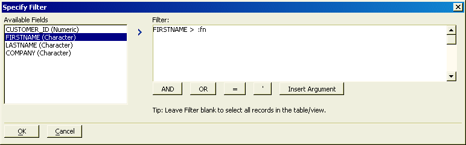

Specify Filter Dialog
The List View Genie uses the Specify Filter dialog to create filter expressions.
Enter an expression in the Filter window.
To insert a field name into the expression, position the cursor in the filter expression, select the field in the Available Fields list, and click
 .
.To insert an argument into the expression, position the cursor in the filter expression, click Insert Argument, and select the argument from the popup list.
Click OK to continue.

 Note : The Specify
Filter dialog does not insure that your expression is correct.
Note : The Specify
Filter dialog does not insure that your expression is correct.
See Also
Define Arguments Dialog, Specify Order Dialog